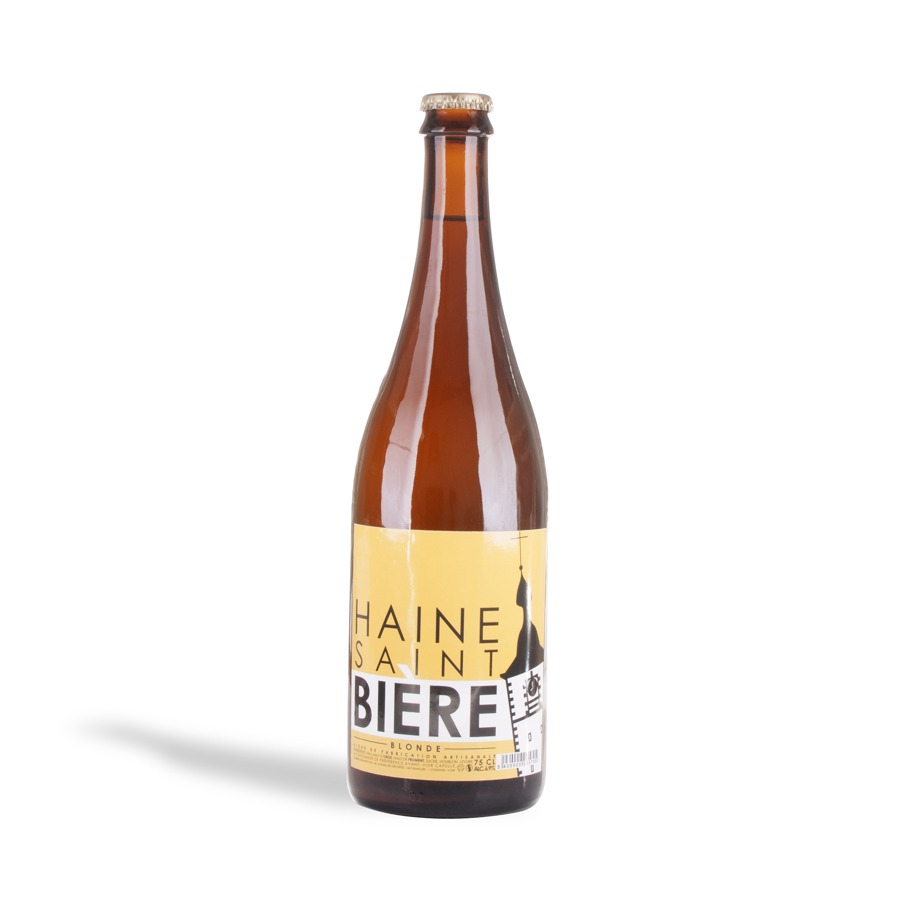
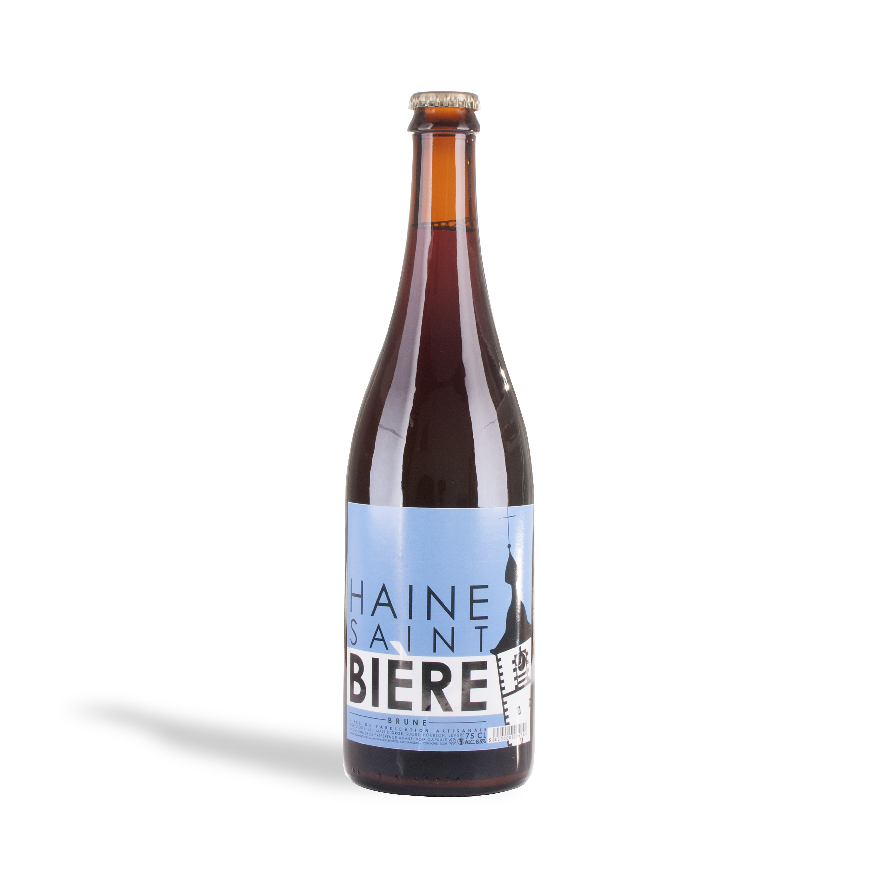
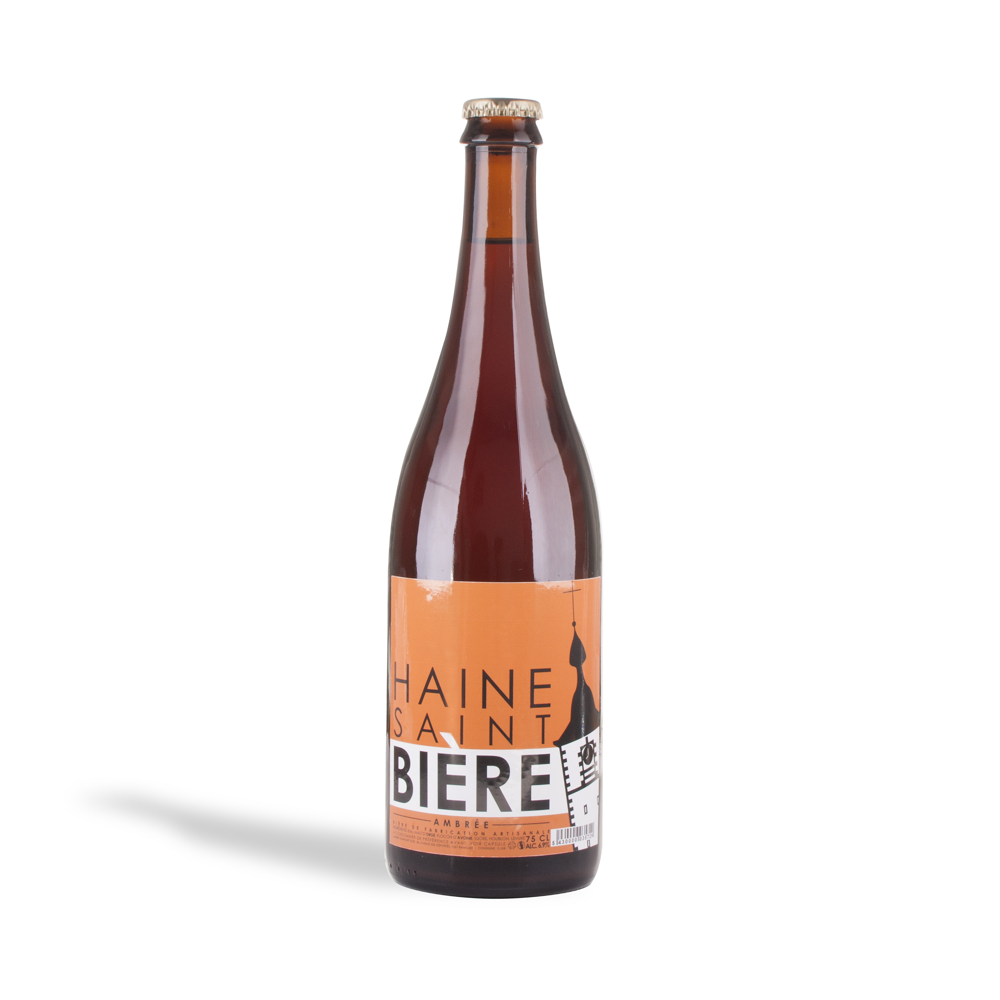
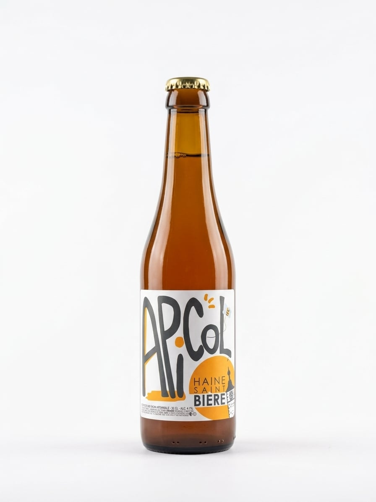
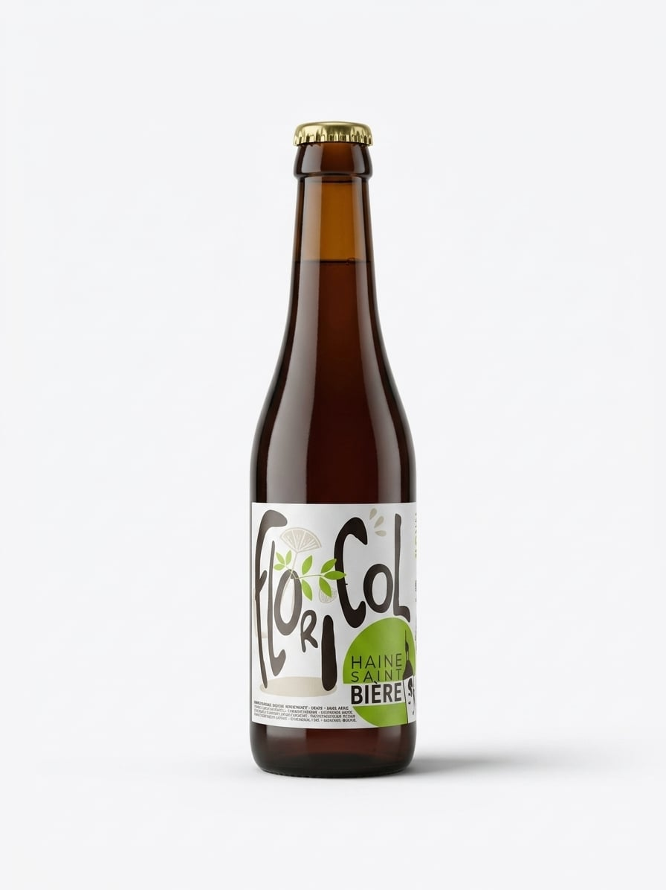
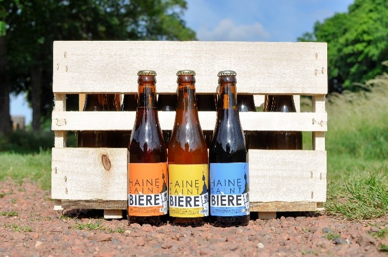
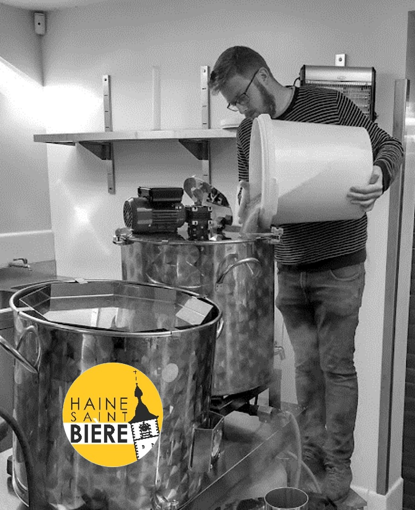
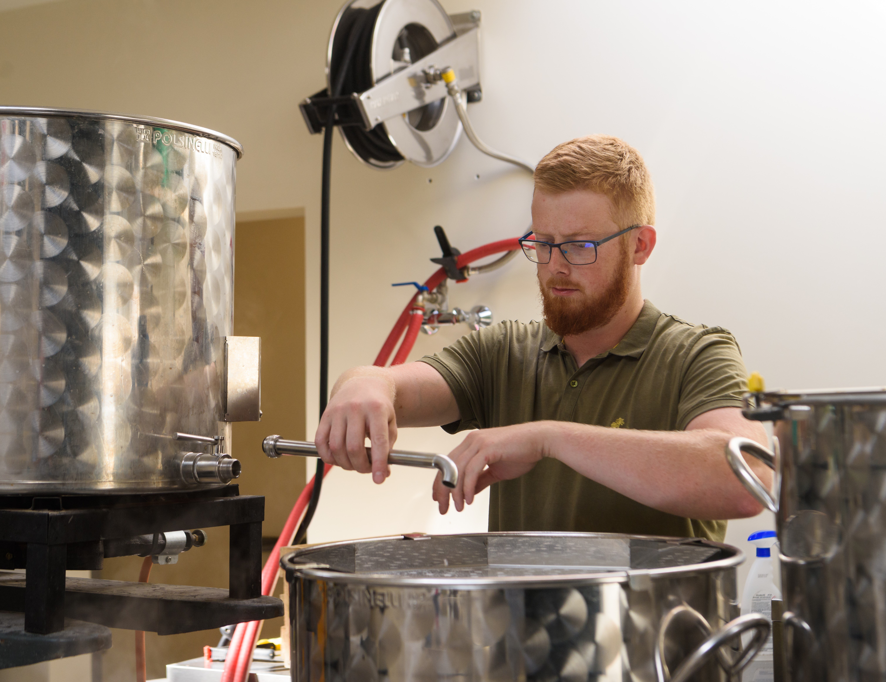
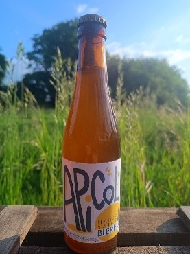
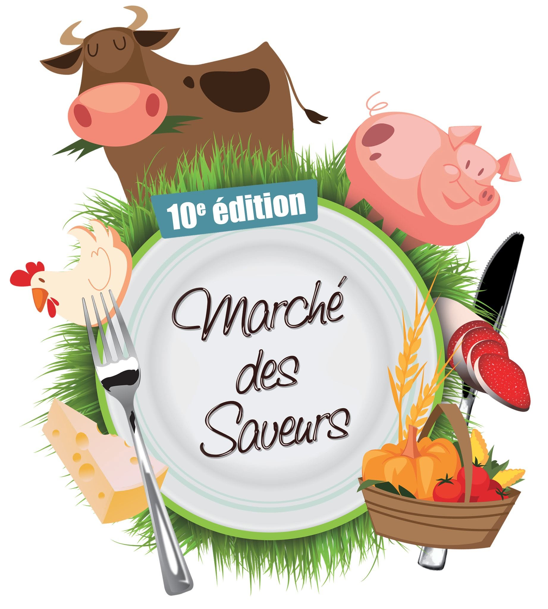

Nos bières

Blonde

Brune

Ambrée
Nos bières de saison

Apicol

Floricol
Notre histoire
Mais d'où vient donc ce breuvage ?... La bière Haine-Saint-Bière provient d’un projet mis en place par une bande de gais lurons de la vie associative et folklorique du fond d’Haine-Saint-Pierre et mis en œuvre par un jeune passionné de bière, Alexandre Duerinckx. L’objectif de cette bière est de proposer un produit de qualité permettant de favoriser des partenariats au sein de la vie associative, commerçante et citoyenne des villages des deux Haines.
La gamme de ces bières est réalisée hyper artisanalement !

En effet, Alexandre maîtrise l'entièreté du processus de production au sein d’une brasserie de 100l. De la sélection des matières premières à l'embouteillage et l'étiquetage, rien n'est laissé au hasard ! La gamme originale est composée de 3 sortes : une blonde aux notes florales, une ambrée possédant une légère amertume et un goût torréfié ainsi qu’une brune forte pour les connaisseurs.


Avec le temps et par soif de créativité, deux nouvelles bières se sont ajoutées au catalogue : une bière aromatisée avec le produit des abeilles, le miel - l’ApiCol - et une bière légère et rafraîchissante à la fleur de sureau - la FloriCol. Si vous désirez goûter une bière artisanale de la région du Centre, n’hésitez pas à venir sur le Stand d’Haine-Saint-Bière.

Nos événements

Marché des saveurs de la commune de Manage
Centre culturel et sportif Le Scailmont
Avenue du Scailmont, 7170 Manage, Belgique